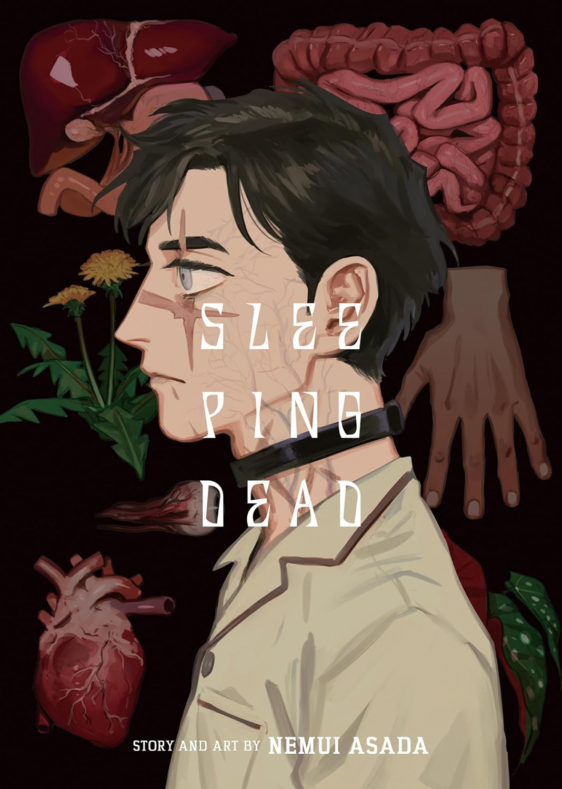

＜—Back
Sleeping Dead
Author: Nemui Asada
Company: Seven Seas
Official Site

Omnibus
Death should have been the end. Instead, an earnest high school teacher named Sada awakens chained to a laboratory slab, his body carved and reconstructed to keep him alive. At the mercy of the brilliant scientist Mamiya, he is remade into something no longer fully human—an experiment sustained by obsession. As buried truths surface and dependency deepens, the line between creator and creation begins to fracture.
Buy (Amazon)